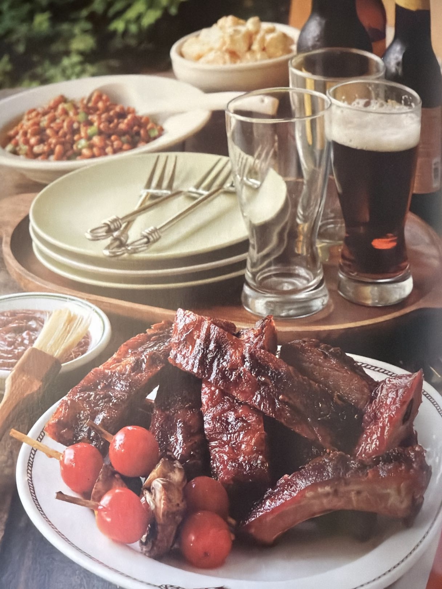

Hero Image

Plated BBQ Ribs.
Description
South Mississippi, my part of the country, has many excellent rib joints. Unlike the vinegar-based North Carolina version, our BBQ is sweet—some say it’s all the pine pollen floating around in the air that makes us crave sweet stuff. Serve the ribs dry with a side of sauce. The rub works well for beef ribs, too.
Ingredients
- 3 full racks pork spareribs, 3–4 lbs each (3-inch/down)
- 2 cups white vinegar
- 1/2 cup paprika
- 1/4 cup garlic powder
- 2 Tbl onion powder
- 1 Tbl freshly ground black pepper
- 2 Tbl kosher salt
- 1/4 cup brown sugar
- 1/4 cup sugar
- 1 Tbl Creole Seasoning
- 1 recipe BBQ Sauce, for serving
Instructions
- Place the ribs in a large roasting pan or baking dish and pour the vinegar over the ribs.
- Using your hand, rub all of the ribs with the vinegar and allow them to marinate for 1 hour.
- Drain the vinegar and dry each rack completely with paper towels.
- Combine the spices, sugars, and Creole Seasoning and coat the ribs completely with the mixture.
- Cover and refrigerate overnight.
- Prepare the grill for indirect low heat.
- Cook the ribs over indirect low heat for 2 1/2 to 3 hours, or until they begin to pull away from the tips of the bones and the entire rack bends easily when held in the middle with a pair of tongs.
- Serve the ribs dry with BBQ sauce on the side.
Tips
- The rub works well for beef ribs too.
- Drying the racks thoroughly after the vinegar soak helps the seasoning adhere better.
- Look for that easy bend in the rack as your doneness cue—not just the clock.
Note: This is a dry-style rib recipe. The sauce belongs on the side, not slathered on during the cook.